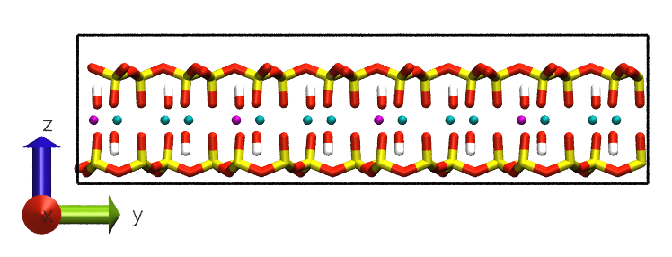
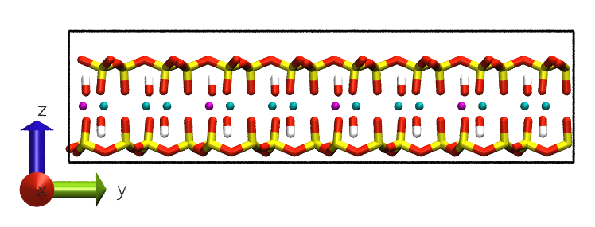

Example Protocol: Decanoic acid on Montmorillonite in a Brine
Necessary files:
- For Clay
- Clay unit cell: MMT.gro (can be .pdb)
- Clay topology: MMT.itp
- Forcefield: ClayFF
- For organic
- Organic structure file: dec_acid.gro (can be .pdb)
- Organic topology: dec_acid.itp
- If there is a special parameter file: dec_acid.prm
- Forcefield: CHARMM36
- For brine
- ions.itp
- water.itp
- For simulation, parameter files
- energy minimization
- equilibration
- production
An alternative tutorial by Thomas Underwood, incl ClayFF files can be found on Tom’s GitHub
Building a system ready for simulation:
There are two steps in building the system for simulation: creating a structure and assigning its topology.
The easiest way to go about creating the simulation box, is to first build a slab of clay with a vacuum space above it, then populate the vacuum space with organics, water and ions.
- Writing a topology file.
A. Topology file links to force field directories and includes molecule topology files. It then states the number of each component unit cell/molecules/ions in the system.
; params for CHARMM, this is where defaults are #include "./charmm36.ff/forcefield.itp" ; params for ClayFF #include "./ClayFF.ff/ffnonbonded.itp" ; params for organic #include "dec_acid.prm" #include "dec_acid.itp" ; params for MMT #include "MMT.itp" ; params for spc water and ions #include "./charmm36.ff/spc.itp" #include "./charmm36.ff/ions.itp" [ system ] ; Name MMT oil brine [ molecules ] ; Compound #mols MMT 24 DEC 10
B. Prepare such topology, taking care to correctly link the files. Note that the names of the compounds should match those in the .itp and .gro files.
- Building simulation box.
A. Create a slab of clay. Check the size of unit cell, how many of them will you need to create a slab of sufficient size? Remember the size of the box has to be at least 2.5 x the size of your cut-off. So, for a cut off at 1.2 nm you have to aim at ~ 3 nm on each side.
gmx genconf –f MMT.gro –nbox 6 4 1 –o MMT_slab.gro
-nbox option defines the number of unit cells to put in each of x y z directions. Note that if you only want one layer of clay, use 1 in the z-direction. If you want more, then stack them up now. The vacuum will be added in the z-direction.


B. Update the number of MMT unit cells in the topology file.
C. Add vacuum in the z-direction. There are tools to do it within Gromacs, such as editconf. Personally, I would just go into the MMT_slab.gro and edit it manually.
D. Add organics. You now have a box with a periodic slab of one clay layer positioned at the bottom and vacuum space. Now you can add the desired number of organic molecules. The program will try to fit the requested number of molecules in the available space. It will notify you about whether it was successful or not.
gmx insert-molecules –f MMT_slab.gro –ci dec_acid.gro –nmol 10 –o MMT_dec.gro
E. Update the number of decanoic acids in your topology file.
F. Add water. The program will try to fill the available space with solvent. Otherwise, you can ask it to add a specific number of water molecules. The program will then try to fit them into a box if enough space is available.
gmx solvate –cp MMT_dec.gro –o MMT_dec_w.gro –p topol.top
–p is optional. If used, the program will automatically update the topology with the correct number of water molecules.
G. Add salt. MMT is a negatively charged clay, that needs to be charge-balanced. Here, we use Na+ ions to counterbalance it. You can also add some saline solution. First, you need to compile your simulation, to produce the topol.tpr file using any .mdp file. Then add the ions with genion.
gmx genion –s topol.tpr –o MMT_dec_w_NaCl.gro –p topol.top –neutral –pname NA –nname CL –conc 0.3


Now your system is ready for simulation!